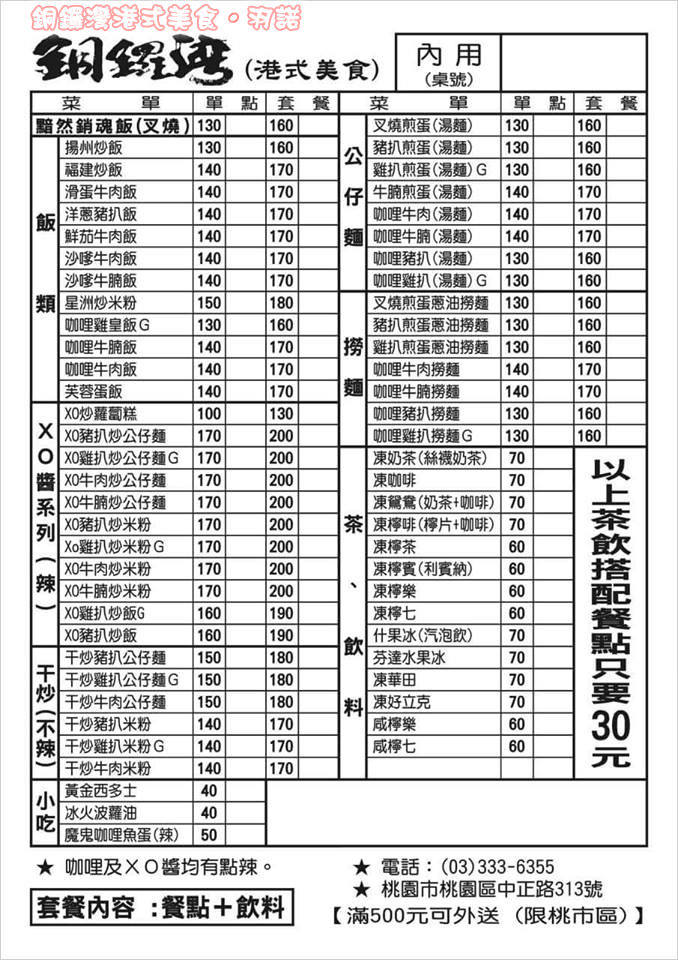
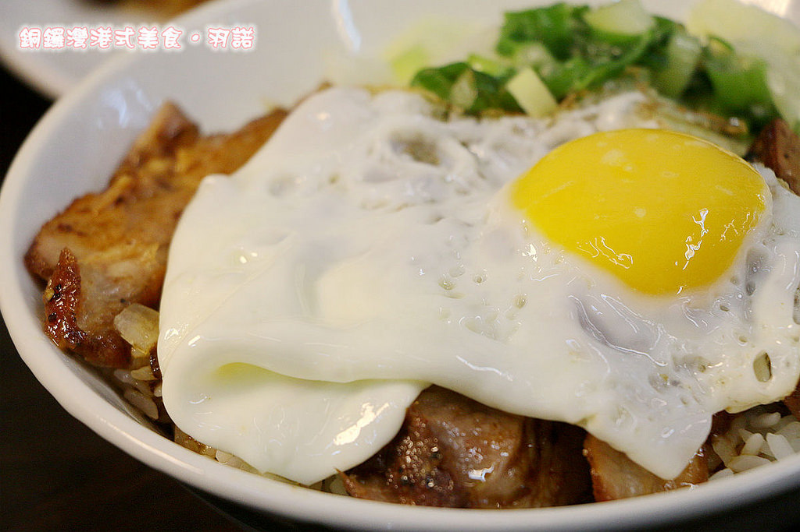
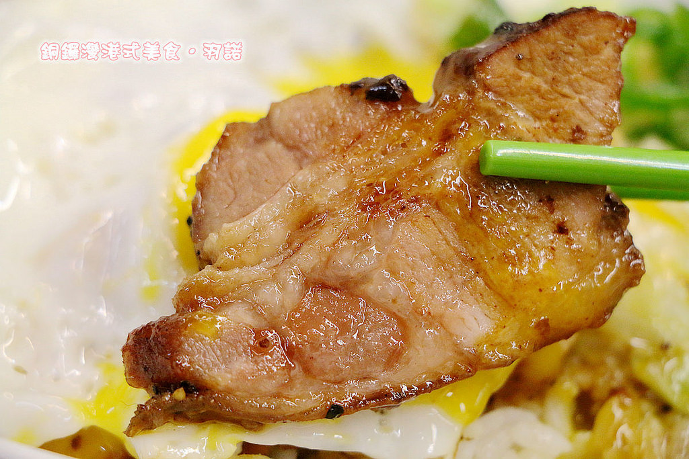
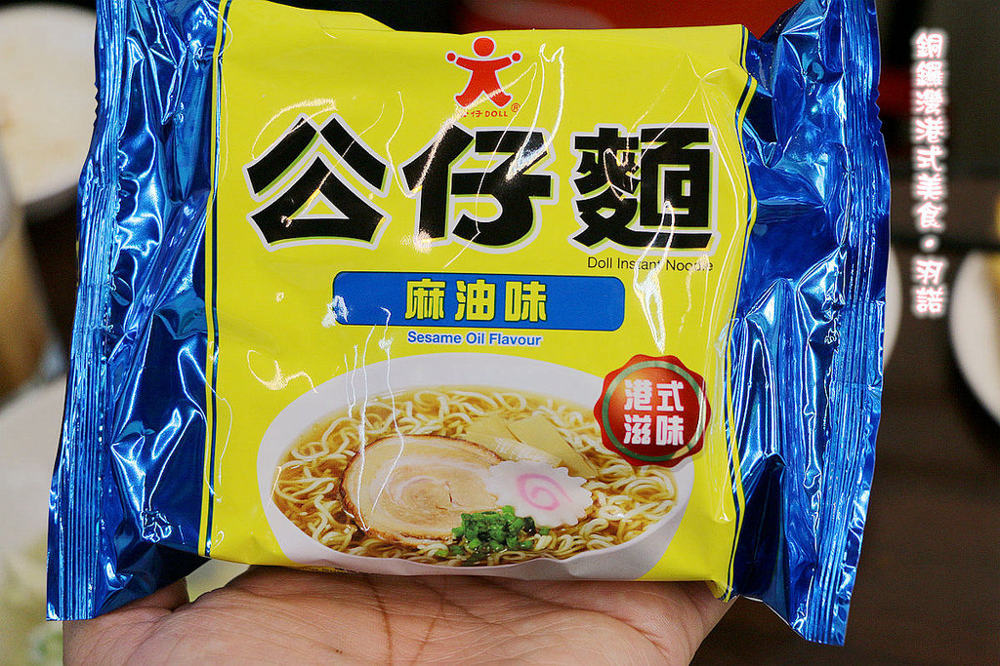

奉上店家資訊
店家名稱:銅鑼灣港式美食
店家電話:03-333-6355
營業時間:週一~週五11:00–20:30
/週六 週日 11:00 - 15:30;16:00-20:30
店家地址:桃園市桃園區中正路313號
這天難得跟幾位格友聚聚順便採訪幾家店家
其中"銅鑼灣港式美食"便是我們今天採訪之一的店家了
這邊營運到今年剛好為開店一年
店家的物料都是特別選用香港進口的
老闆是個道地的香港人
曾經在香港北角炮台山開設過
後來移點至台灣桃園
在台灣港式料理蠻常見的
不過諾咪卻很品嚐到由道地的香港人親自料理
讓諾咪迫不及待的想試試呢
門口維持的明亮乾淨
玻璃上還貼著店內餐點的介紹
讓我們雖然還沒看到menu 卻對店裡賣的餐點也略知一些

店內的座位空間不大 約能容納20人左右
不過卻不會給人擁擠的感覺
牆面上也有貼著舊時的香港電影海報 讓羽諾真有置身於香港的感覺
餐具及飲料都是自取
不過拿了飲料後 要先到櫃檯結帳喔

菜單(取自官方粉絲團)
菜單內容蠻豐富的
店內主要是賣港式料理
從飯類 XO醬系列 干炒 小吃 公仔麵 撈麵 到茶及飲料就有很多可以選擇
這是這天我們所點的飲料
由上至下 左至右排序為
凍奶茶(絲襪奶茶) 什錦水果冰(氣泡飲) 凍鴛鴦(奶茶+咖啡)
凍檸賓(利賓納) 咸檸樂及凍檸茶
其中羽諾最喜歡的是由老闆嚴選的三種茶葉加上新鮮萊姆調成的凍檸茶 風味很不錯呢
雞扒煎蛋蔥油撈麵$130
上面鋪了炸雞 荷包蛋及些許蔥花
炸雞吃起來多汁不油膩
與荷包蛋搭配 再扒入幾口飯進嘴巴
咬下一口瞬間充滿了蛋香 吃起來十分可口耶
如果喜歡吃辣的朋友
也可以加入店家特製的XO秘醬喔
再來要介紹的這到料理
看看這對白有想起來是哪部港片嗎?
常看周星馳電影的朋友想必對這經典台詞一點都不陌生吧
除了電影裡有傳說中的黯然銷魂飯外
沒想到在"銅鑼灣港式美食"也能品嚐到!!

鋪上了叉燒及荷包蛋的黯然銷魂飯光用看的就覺得很迷人
而且裡頭還真的加入了洋蔥耶


淋上蛋液的叉燒那亮度十分有光澤
入口除了有叉燒的香氣外 還有超有魅力的蛋香
主角 叉燒也有很不錯的表現
肥瘦拿捏恰好 可是又有濃厚的油花香
讓羽諾一口接著一口停不下來啊
不過這碗"黯然銷魂飯"可是限量的唷
建議可以先打電話跟店家預約啊


魚丸入口有著淡淡的咖哩香
彈牙的口感一直都是羽諾的最愛
之前去香港時都一定會來一碗咖哩魚蛋來念念舊
黃金西多士
以煎至而成的麵包再淋上煉乳
吃起來挺香甜的
夾心的部分還嚐的到裡頭的花生醬
飯後來一份這樣的點心剛好
店家名片
諾咪這次的介紹到這邊囉 希望大家喜歡
經過附近時不妨也來嘗嘗看吧!!
引用文章:羽諾的吃喝玩樂日記~